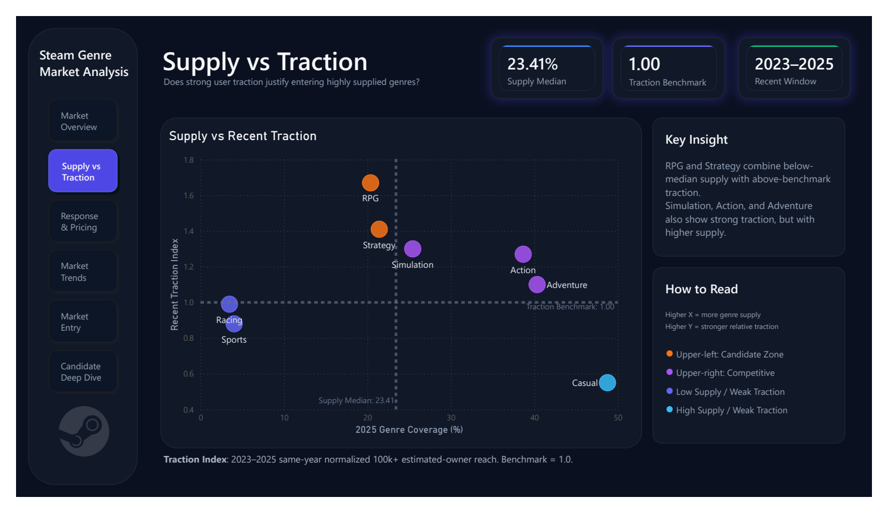

117,715 games · 8 core genres · trend window 2017–2025
Which Steam game segments deserve further product investigation for a small indie studio?
Published reportApproach
Data audit → cleaning → validation → Python/pandas → PostgreSQL/SQL → Power BI → interpretation.
Data & interpretation
FronkonGames Steam Games Dataset. Estimated owners and peak concurrent players are traction indicators, not actual sales or revenue. Candidate segments require further investigation; observed relationships do not establish causation.
What the report found
RPG and Strategy are candidates for further investigation: both combine below-median supply with above-benchmark traction. Simulation is a more competitive alternative. These are exploratory findings, not forecasts of sales or revenue.